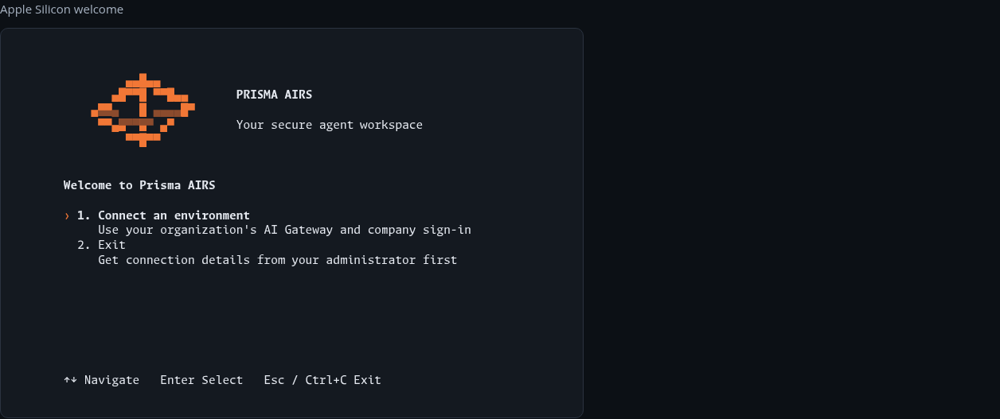
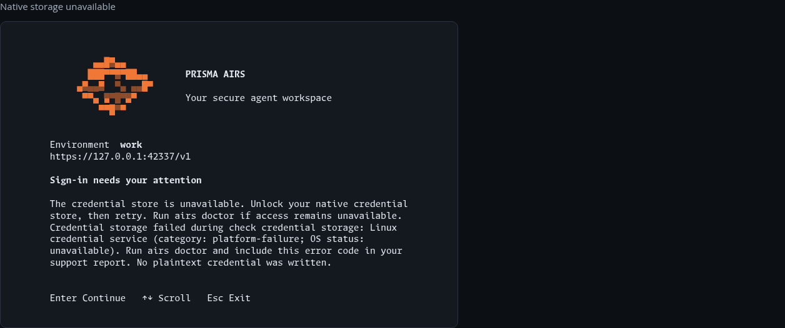
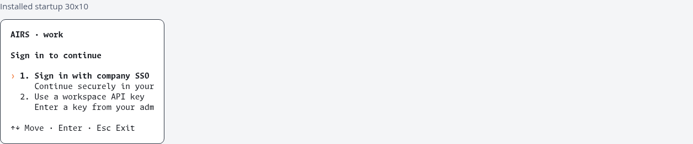

Candidate 0.1.0-alpha.22.onboarding.1. Actual installed terminal output, captured with DEC 1049 alternate-screen handling. Synthetic local HTTPS authentication; no production SSO or ServiceNow claim.
Source and verified candidate download · Documentation review


